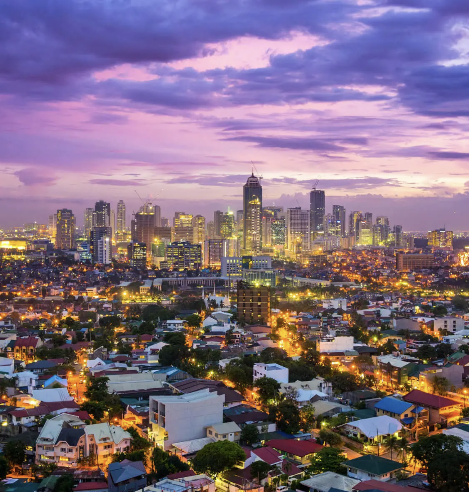
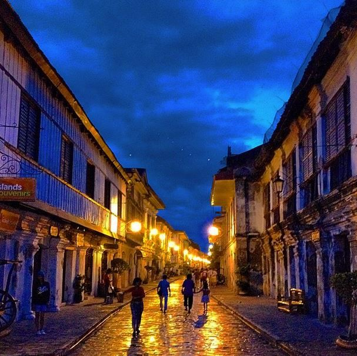
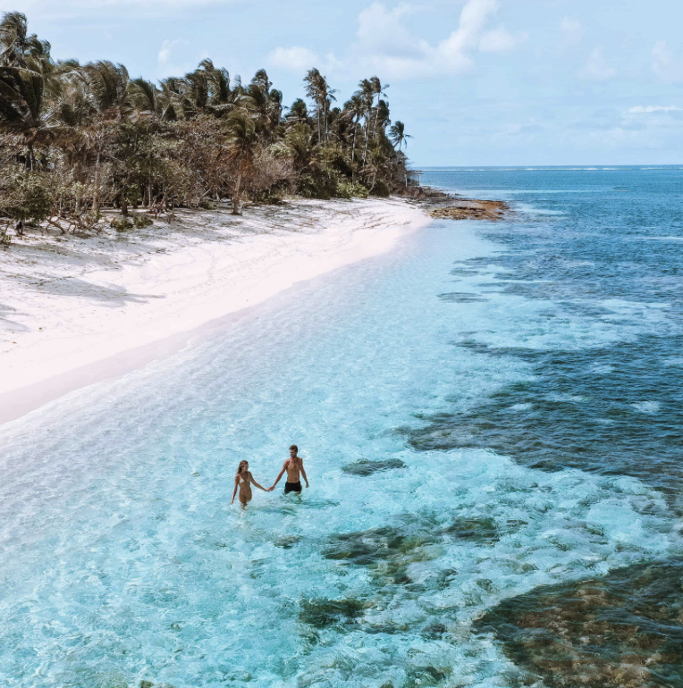
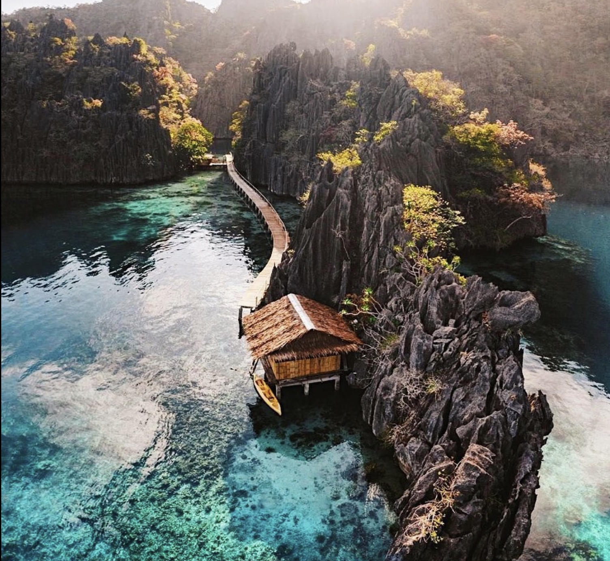

Manila
If we're talking about must see areas of the Philippines, then we must talk about Manila. The capital city of the Philippines, Manila, is a bustling city and a melting pot of many cultures. Home to historical landmarks, various shopping sites, exquisite nightlife areas, and beautiful green parks, Manila is a city perfect for those who seek to have a taste of various aspects of the Filipino experience.

Vigan
This list would be incomplete without Vigan. Vigan City lies in the region of northern Luzon. It was declared a UNESCO World Heritage Site, and it showcases a mix of vintage Philippine and Spanish architecture and culture. With cobblestone roads, preserved houses, and blooming culture, it's as if we enter the 16th century, giving us a glimpse of the Philippines’ old environment and look.

Siargao
Siargao combines natural beauty and rich cultural heritage to create a must-visit destination for thrill-seekers and nature lovers alike. Dubbed as the "surfer's paradise," it is known for pristine white sand beaches, ideal waves, and lush greenery. Stunning beaches sit all around the coast of the teardrop shaped island, and it's surely one you must not miss when in the Philippines.

Coron
Coron boasts stunning limestone cliffs, pristine beaches, and crystal-clear waters that are home to renowned diving spots. These diving spots show an abundance of marine life accompanied with their homes, a beautiful spread of coral reefs. If you're seeking a secluded getaway area with less people and breathtaking natural beauty, this amazing island should be at the top of your list.